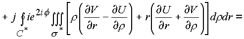

|
В. И. ЕЛИСЕЕВ ВВЕДЕНИЕ В МЕТОДЫ ТЕОРИИ
ФУНКЦИЙ ПРОСТРАНСТВЕННОГО КОМПЛЕКСНОГО ПЕРЕМЕННОГО |
|
1.3.6. Поверхностные интегралы
Рассмотрим в пространстве поверхность, которая охватывает объем, и сформулируем условия существования поверхностного интеграла.
Разобьем произвольную поверхность в пространстве на элементарные площадки
ds , образованные пересечением кривых C*, C*. Сетку из кривых определим, анализируя дифференциалы.Рассмотрим
и
Рис. 28. Различные варианты однозначных ветвей логарифмической функции
Элемент площадки
ds * образуется пересечениемИмеем
Поверхность
ds состоит из четырех поверхностейНа рис. 28 дана геометрическая взаимосвязь площадок.

Рис. 29. Расположение элементарных площадок в комплексном пространстве.
Элемент
ds * состоит из суммы проекционных площадок, одна из которых ds 2 взята с отрицательным знаком, так как согласно геометрической интерпретации (рис. 29) эта площадка дважды входит в элемент: один раз в площадку. ds 4 и один раз в площадку ds 3.Определим поверхностный интеграл
рассмотрим последовательно интегралы
JJ1 и JJ2:Преобразуем интегралы
ll1 и ll2 в повторные интегралы по сеткам C*, C*:Криволинейные интегралы по C
* сведем к поверхностным, применив формулу Грина:В результате преобразований имеем

Подынтегральное выражение преобразуется к следующему виду объемного интеграла
Подынтегральное выражение этого интеграла было получено на контуре f
= const при исследовании криволинейного интеграла, когда по формуле Грина делался переход к поверхностному интегралу, поэтому(1.55.) |
В итоге поверхностный интеграл по элементарной площадке
свели к двукратному интегрированию сначала по кривой С*, а затем по кривой С*.Вследствие этого, если кривая является замкнутой кривой С
3, то поверхностный интеграл не зависит от формы поверхности, которая натянута в пространстве на эту кривую.От поверхности натянутой на кривую С
3 (рис. 26), можно непрерывным образом перейти к поверхностиТеорема 4. Пусть функция
f(n ) дифференцируема в односвязной области G пространства (n ) и пусть имеется гладкая поверхность s . Тогда для любой точки n 0, лежащей внутри объема G, заключенного внутри замкнутой (геометрически) поверхности, имеет место формула(1.56.) |
где
ds - дифференциал упомянутой поверхности.Доказательство начнем со следующего замечания. Если около точки
n 0 построена шаровая поверхность (в нашем случае сфера с проколотыми вершинами)то в этом случае
,
а
Поэтому
| (1.57.) |
Далее. Функция
дифференцируема по x в области пространства (n ) с выколотым туннелем, проходящим через точку n 0. Выберем величину так, чтобы шар вместе со своей поверхностью лежал внутри поверхности s . Тогда интеграл преобразуется к следующему виду:Рассмотрим обозначенные интегралы
J1 и J2. Вычислим их.Докажем, что
J1=0. Радиус R можно взять сколь угодно малым. Поэтому в силу независимости интеграла от формы поверхности на основании формулы (1.55) и непрерывности функции f(n ) в точке n 0 для любого e >0 найдется такое , что неравенство будет выполнятся для всех x , для которыхОтсюда
и, следовательно
J1=0, так как J1 не зависит от R.Окончательно можно записать, что

Теорема 5. (о среднем). Пусть функция дифференцируема внутри шара
Доказательство. Положим
что требовалось доказать.
Формулы (
1.52.), (1.56) допускают дифференцирование слева и справа (под знаком интеграла) по переменной. При этом равенство сохраняется и таким образом получается формула n -производной рассматриваемой функции как через одномерный, так и двойной интегралы. Заодно доказывается и существование производной.Мини оглавление:
[0], [1.1.1, 1.1.2, 1.1.3, 1.1.4, 1.1.5, 1.1.6, 1.1.7, 1.1.8, 1.2, 1.2.1, 1.2.2, 1.2.2.a, 1.2.2.b, 1.2.2.c, 1.2.2.d, 1.2.2.e, 1.2.2.f, 1.2.2.g, 1.2.2.h, 1.2.3, 1.3.1, 1.3.2, 1.3.3, 1.3.4, 1.3.5, 1.3.6, 1.4.1, 1.4.2, 1.5, 1.6, 1.7.1, 1.7.2, 1.7.3.1, 1.7.3.2, 1.7.3.3, 1.7.4.1, 1.7.4.2, 1.8.1], [2.1, 2.2],[3.1, 3.2, 3.3, 3.4.1, 3.4.2, 3.4.3, 3.4.4, 3.4.5],[4.1, 4.2, 4.3, 4.4],[5.1, 5.1.Рис.52, 5.2, 5.3, 5.4, 5.4.Т1, 5.4.Т2, 5.4.Т3, 5.5.1, 5.5.2, 5.5.3, 5.5.4],[6.1.1, 6.1.2, 6.2.1, 6.2.2, 6.2.3, 6.2.4, 6.2.5, 6.3, 6.4.1, 6.4.2, 6.5.1, 6.5.2],[7.1, 7.2, 7.3, 7.4, 7.5, 7.6, 7.7.1, 7.7.2, 7.8.1, 7.8.2, 7.8.3, 7.9],[8.1, 8.2.1, 8.2.2, 8.3, 8.4, 8.5, 8.6, 8.6.T1, 8.7, 8.8.1, 8.8.2, 8.8.3, 8.9.1, 8.9.2, 8.9.3, 8.10, 8.10.T2, 8.10.T3],[9.1, 9.2, 9.3, Рис.88, 89, 90, 91, 92, 93, 94, 95, 96, 97, 98, 99, 100],[10.1, 10.2, 10.3, 10.4, 10.5, 10.6, 10.7, 10.8, 10.9, 10.10, 10.11, 10.12, 10.13, 10.14, 10.15.1, 10.15.2, 10.16.1, 10.16.2, 10.17, 10.18],[11]
Размещенный материал является электронной версией книги: © В.И.Елисеев, "Введение в методы теории функций пространственного комплексного переменного", изданной Центром научно-технического творчества молодежи Алгоритм. - М.:, НИАТ. - 1990. Шифр Д7-90/83308. в каталоге Государственной публичной научно-технической библиотеки. Сайт действует с 10 августа 1998.
E-mail: mathsru@gmail.com